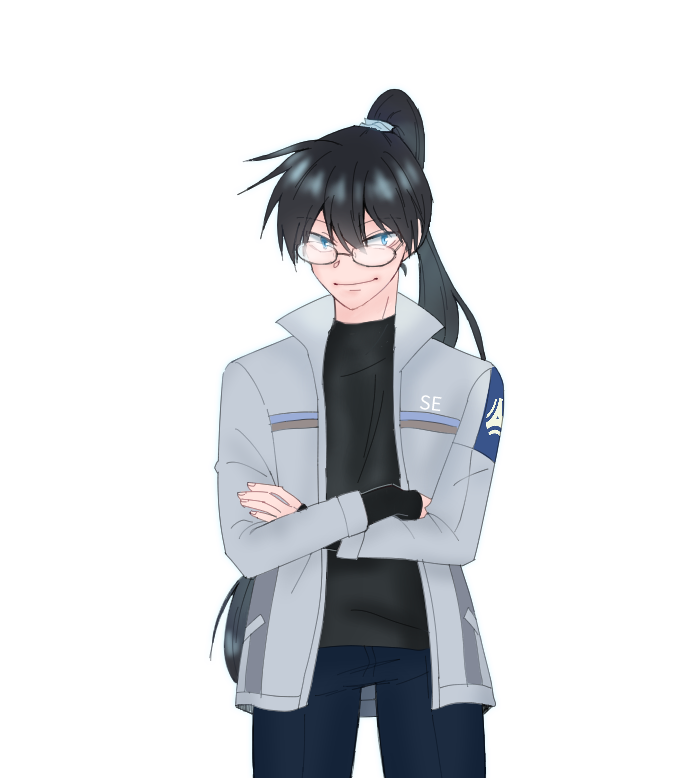
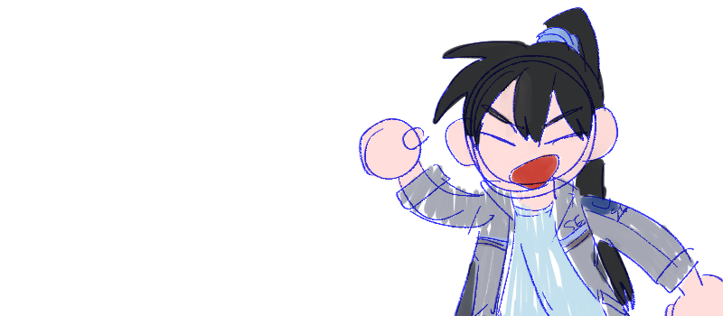

"얌마들아, 밥은 먹었냐?"
| 이름 | 한 강 |
|---|---|
| 나이 | 37세 |
| 성격 | 유쾌, 상쾌, 통쾌. 만나기만하면 밥먹었냐고 물어보고 사람들에게 먹이는 것을 즐긴다. |
| 기타 | 애칭은 리버. |
| 부서 | 기술팀 |
| 오너 | 라틸 |
| 한 성운 |
동갑내기 고종사촌. 명절에도 자주 보았는데 같은 학교까지 다니게 되어서 더 자주 보았다. 서로 잘 통하고 친척들 중 가장 친하다고 생각한다. 가끔 신나서 지나치게 하이텐션이 되고는 한다. 머리가 부드럽다고 생각하고있다. |
|---|---|
| 데이브 루크스 |
(미래의)저명한 학자와 지지자. 언젠가 뎁이 자서전이나 논문을 쓰게 되면 스페셜 땡스란에 병뚜껑 따 준 사람: 한강(리버) 하고 이름을 써넣기로 약속한 사이. 쿵짝이 잘 맞는 사람. 같이있으면 재미있다. |
| 알렉산드라 로마노바 |
애완 문어 로봇 만들기 팀. 애완 문어 로봇 만들기에서 제작을 담당하고있다. 하지만 늘 밥과 술만 든든하게 먹고 헤어진다. 술은 약한 주제에 사샤만 믿고 마구마신다. |